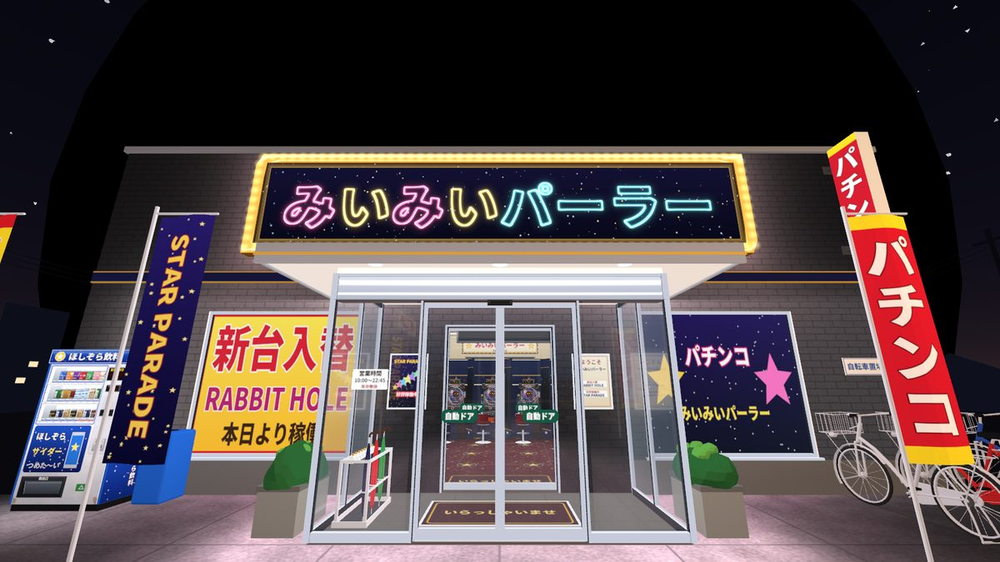

最后更新：2026-11-24（周二）
首页

VRChat 世界「MiiMii Parlor」的攻略wiki。汇总机台规格、演出信赖度和店内玩法。
※数值可能随店家调整而变化。
设置机种
| 机种 | 类型 | 大当 | 台数 | 备注 |
|---|---|---|---|---|
| CRYSTAL | 突破型 ST 机 | 1/119.8 | 4 台 | 新台。一半直接进入 RUSH。RUSH 是 ST 12 转 |
| RABBIT HOLE | ST机 | 1/99.0 | 4 台 | ST 10 转，只能左打 |
| STAR PARADE | 确变循环 | 1/69.7 | 4 台 | 确变持续到下一次大当。时短 15 转 |
※1 颗珠 4 Mi（500 Mi 换 125 颗）。岛的前排（南侧）西边是 CRYSTAL，东端前后排是 RABBIT HOLE，后排（北侧）西边是 STAR PARADE。
本站用到的柏青哥术语
| 术语 | 意思 |
|---|---|
| 大当 | 大当たり。中大奖，进入大量出珠的状态 |
| 确变 | 确率变动。大当概率提高，持续到下一次大当 |
| 时短 | 时间短缩。转得更快并有电动辅助，但概率不变。STAR PARADE 里叫 Chance Time |
| ST | 只持续固定转数的确变（RABBIT HOLE 是 10 转，CRYSTAL 是 12 转） |
| 突破型 | 只有一部分初次大当会进入 RUSH 的类型（CRYSTAL 是一半） |
| Reach | リーチ。两列图案一致，第三列还在转。超级 Reach 是又长又华丽的那种 |
| 保留 | 存着没转的抽选。用保留灯显示，颜色暗示结果 |
| 预告 | 在转动中或 Reach 前后暗示结果的演出 |
| 激热 | 激アツ，意为“超热”。本站指信赖度 50% 以上的演出 |
| 特殊演出 | プレミア。极少出现、出现即大当确定的演出 |
| RUSH | 大当后的 ST 或确变阶段（RABBIT HOLE 叫 Rabbit RUSH，CRYSTAL 叫 Crystal RUSH） |
新手须知
- 不用坐下来占台。在空台上按 打つ（打）、玉を借りる（借珠）、貯玉から出す（取出存珠）中的任意一个即可（占台方法）
- 力度是自动的。STAR PARADE 和 CRYSTAL 在大当、确变（RUSH）、时短中会自动切换成右打
- Mi 花光了就去当咖啡售货员。3 杯换 250 颗存珠（赚钱）
- 不知为什么，店外的神秘古董商（Hoshino Shokai）会收购奖品（神秘古董商）
- 玄学是有效的。比如点一根烟等 2 分钟（玄学）
最近更新
- 2026-11-24（周二）CRYSTAL：创建新台页面
- 2026-11-24（周二）STAR PARADE：入赏口的赏球改为 3。新增数字颜色
- 2026-11-24（周二）RABBIT HOLE：大奖口的赏球改为 11，入赏口改为 4。修正出珠。新增数字与转法
- 2026-11-23（周一）STAR PARADE：确变中的概率改为 1/20.0。已修正规格表
- 2026-11-23（周一）RABBIT HOLE：ST 中的概率改为 1/9.0。继续率修正为约 69%
- 2026-11-23（周一）店内玩法：机台改为站着打，因此重写了占台方法。新增会员等级和品牌表
- 2026-11-22（周日）RABBIT HOLE：创建新台页面
页面列表
- STAR PARADE
- RABBIT HOLE
- CRYSTAL
- 店内玩法（占台方法、钢珠与奖品、赚钱、玄学、会员等级）
- 常见问题